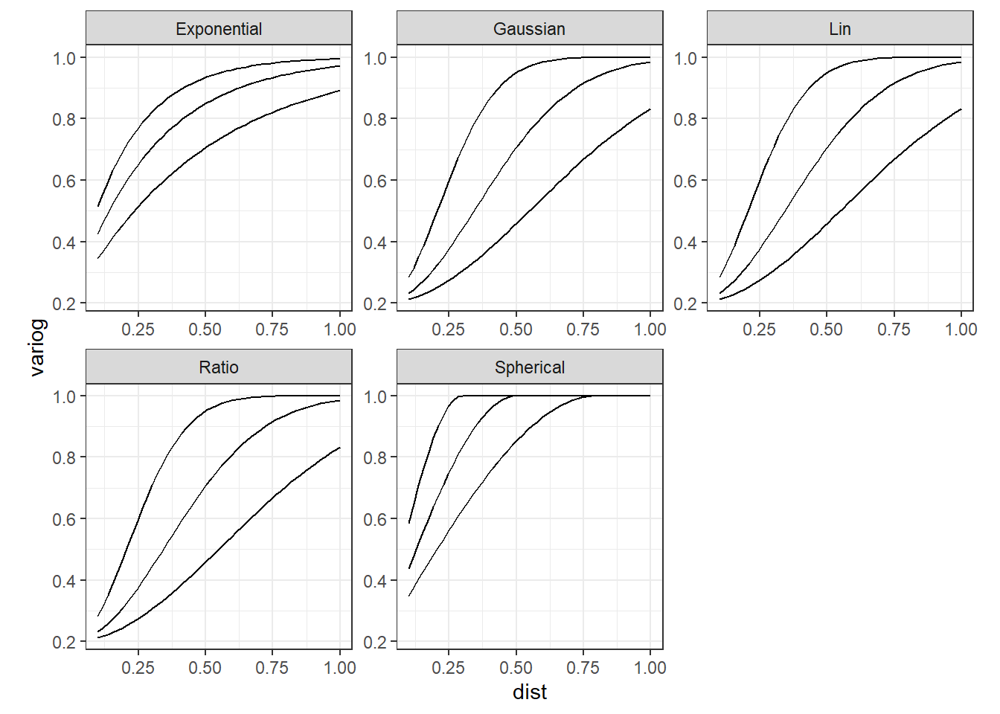
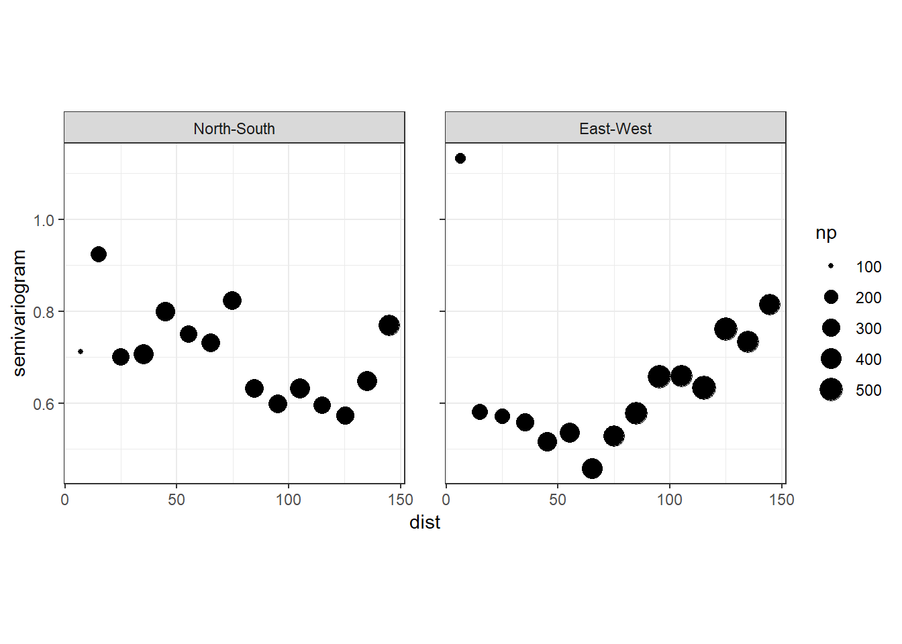

3 Spatial data and GLS
本章では、今度は空間的相関を持つデータにGLSを適用する。
3.1 Variogram models for spatial dependency
時系列データに対しては、異なる残差間の相関を以下のような関数\(h()\)で定義した。
\[ h(\phi, \epsilon_t, \epsilon_ss) = \phi^{|t-s|} \]
しかし、空間データに対して全く同じことをすることはできない。その代わり、残差のバリオグラムの形に応じて数学的モデルを選択し、それを用いて残差の分散共分散行列\(\bf{\Sigma}\)を計算することになる。nlmeパッケージには、corExp、corSpher、corLin、corGaus、corRatioなど、残差の空間的なパターンをモデリングするための様々なモデルがある(これらは、カーネルとも呼ばれる)。それぞれのモデルは2つのパラメータを持つ。詳細な数学的表現については、?corClassesでヘルプを参照するか、 Dale and Fortin (2014) や 村上 (2022) を参照。
例えば、指数バリオグラム(corExp)は以下のように定義される。なお、\(s\)は2地点間の距離、\(\phi\)はレンジ(range)と呼ばれるパラメータであり、自己相関がなくなるまでの距離を表す。
\[
h(s, \phi) = 1 - e^{-\frac{s}{\phi}}
\]
同様に、球形(corSpher)は以下のように定義される。
\[
\begin{aligned}
h(s, \phi) =
\begin{cases}
1 - \frac{3}{2}\frac{s}{\phi} + \frac{3}{2}(\frac{s}{\phi})^3 \;\; &if \; 0 \le s < \phi \\
0 \;\; &if \; \phi < s
\end{cases}
\end{aligned}
\]
また、ガウス型(corGaus)は以下のように定義される。
\[
h(s, \phi) = exp \Bigl( -\bigl( \frac{s}{\phi} \bigl)^2 \Bigl)
\]
これらのモデルは距離が0のときバリオグラムの値も0になってしまうため、距離が0のときのバリオグラムの値を指定することができる(= ナゲット効果)。
様々なモデルのバリオグラムを図示したのが以下である。
#corExp
mydata <- data.frame(D = seq(0,1,by = 0.1))
cprExp <- NULL
phi_exp = c(0.2, 0.3, 0.5)
nugget = 0.2
for(i in seq_along(phi_exp)){
corExp(c(phi_exp[i],nugget), form = ~ mydata$D,
## ナゲット効果
nugget = T,) %>%
Initialize(,data=mydata) %>%
Variogram() %>%
mutate(phi = phi_exp[i],
type = "Exponential") -> vario.out
cprExp <- bind_rows(cprExp, vario.out)
}
#CorSpher
cprSph <- NULL
phi_sph = c(0.3, 0.5, 0.8)
nagget = 0.3
for(i in seq_along(phi_sph)){
corSpher(c(phi_sph[i], nugget) , form = ~ mydata$D,
nugget = T) %>%
Initialize(, data=mydata) %>%
Variogram() %>%
mutate(phi = phi_sph[i],
type = "Spherical") -> vario.out
cprSph <- bind_rows(cprSph, vario.out)
}
#CorGaus
cprGaus <- NULL
phi_gaus = c(0.3, 0.5, 0.8)
nagget = 0.3
for(i in seq_along(phi_gaus)){
corGaus(c(phi_gaus[i], nugget) , form = ~ mydata$D,
nugget = T) %>%
Initialize(, data=mydata) %>%
Variogram() %>%
mutate(phi = phi_gaus[i],
type = "Gaussian") -> vario.out
cprGaus <- bind_rows(cprGaus, vario.out)
}
#CorRatio
cprRatio <- NULL
phi_ratio = c(0.3, 0.5, 0.8)
nagget = 0.3
for(i in seq_along(phi_ratio)){
corGaus(c(phi_ratio[i], nugget) , form = ~ mydata$D,
nugget = T) %>%
Initialize(, data=mydata) %>%
Variogram() %>%
mutate(phi = phi_ratio[i],
type = "Ratio") -> vario.out
cprRatio <- bind_rows(cprRatio, vario.out)
}
#CorLin
cprLin <- NULL
phi_lin = c(0.3, 0.5, 0.8)
nagget = 0.3
for(i in seq_along(phi_lin)){
corGaus(c(phi_lin[i], nugget) , form = ~ mydata$D,
nugget = T) %>%
Initialize(, data=mydata) %>%
Variogram() %>%
mutate(phi = phi_lin[i],
type = "Lin") -> vario.out
cprLin <- bind_rows(cprLin, vario.out)
}
## 図示
bind_rows(cprExp, cprGaus, cprSph, cprRatio, cprLin) %>%
mutate(phi = as.factor(phi)) %>%
ggplot(aes(x = dist, y = variog))+
geom_line(aes(group = phi))+
facet_rep_wrap(~type, repeat.tick.labels = TRUE)+
theme_bw()+
theme(aspect.ratio = 1)
分析は以下の5ステップで行う。
- 空間的相関を考慮せずにモデリングを行う。
- 1のモデルの残差のバリオグラムを書く。
- バリオグラムの形を基に、どのバリオグラムモデルを適用するか決める。
- バリオグラムモデルを含み、空間的相関を考慮したモデリングを行う。
- 4のモデルが問題ないかをチェックする。
3.2 Application on the Irish pH data
本節では、第1.2節で分析したアイルランドの河川のpHを調べたデータを再び用いる。空間的相関を考慮しない通常の線形回帰については第1.2節ですでに実行しているため、これに関する説明は省略する(step1とstep2)。図1.6からどのバリオグラムモデルが適切かを判断することが難しいため、可能なバリオグラムモデルを全て当てはめる。
iph %>%
mutate(Xkm = Easting/1000,
Ykm = Northing/1000) -> iph
m4_1 <- gls(pH ~ SDI + logAltitude*fForested,
data = iph, method = "REML")
## 指数モデル
m4_1_exp <- update(m4_1,
correlation =corExp(form = ~ Xkm + Ykm,
nugget = TRUE))
## Linモデル
m4_1_lin <- update(m4_1,
correlation =corLin(form = ~ Xkm + Ykm,
nugget = TRUE))
## Gausモデル
m4_1_gau <- update(m4_1,
correlation =corGaus(form = ~ Xkm + Ykm,
nugget = TRUE))
## 球形モデル
m4_1_sph <- update(m4_1,
correlation =corSpher(form = ~ Xkm + Ykm,
nugget = TRUE))
## Ratioモデル
m4_1_rat <- update(m4_1,
correlation =corRatio(form = ~ Xkm + Ykm,
nugget = TRUE))各モデルのAICを比較すると指数モデル(m4_1_exp)と比率モデル(m4_1_rat)が最もAICが低い。しかし、その他の空間的相関を考慮したモデルはむしろAICが高くなっていることが分かる。このことは、これらのモデルで推定されたレンジ(\(\phi\))の値が0に近いことを示している。
実際、時数モデルと比率モデル以外はレンジの推定値がほとんど0になっていることが分かる。
bind_rows(coef(m4_1_exp$modelStruct$corStruct, unconstrained = FALSE),
coef(m4_1_lin$modelStruct$corStruct, unconstrained = FALSE),
coef(m4_1_gau$modelStruct$corStruct, unconstrained = FALSE),
coef(m4_1_sph$modelStruct$corStruct, unconstrained = FALSE),
coef(m4_1_rat$modelStruct$corStruct, unconstrained = FALSE)) %>%
mutate(model = c("Exp","Lin","Gaussian","Spherical","Ratio")) %>%
select(model, everything())これは、gls関数ではレンジphiを推定する際に、指定しなければ最短の距離の90%の値をアルゴリズムの初期値として使用するために生じている。この問題を回避するためには、以下のようにvalue =で初期値を指定する必要がある。ここでは、レンジに50、ナゲットに0.1を割り当てている(Linモデルだけ収束しなかったので、レンジの初期値に25を割り当てている)。
## 指数モデル
m4_1_exp2 <- update(m4_1,
correlation =corExp(form = ~ Xkm + Ykm,
nugget = TRUE,
value = c(50, 0.1)))
## Linモデル
m4_1_lin2 <- update(m4_1,
correlation =corLin(form = ~ Xkm + Ykm,
nugget = TRUE,
value = c(25, 0.1)))
## Gausモデル
m4_1_gau2 <- update(m4_1,
correlation =corGaus(form = ~ Xkm + Ykm,
nugget = TRUE,
value = c(50, 0.1)))
## 球形モデル
m4_1_sph2 <- update(m4_1,
correlation =corSpher(form = ~ Xkm + Ykm,
nugget = TRUE,
value = c(50, 0.1)))
## Ratioモデル
m4_1_rat2 <- update(m4_1,
correlation =corRatio(form = ~ Xkm + Ykm,
nugget = TRUE,
value = c(50, 0.1)))新しいモデルでは、レンジの推定値が0に近くなくなっている。
bind_rows(coef(m4_1_exp2$modelStruct$corStruct, unconstrained = FALSE),
coef(m4_1_lin2$modelStruct$corStruct, unconstrained = FALSE),
coef(m4_1_gau2$modelStruct$corStruct, unconstrained = FALSE),
coef(m4_1_sph2$modelStruct$corStruct, unconstrained = FALSE),
coef(m4_1_rat2$modelStruct$corStruct, unconstrained = FALSE)) %>%
mutate(model = c("Exp","Lin","Gaussian","Spherical","Ratio")) %>%
select(model, everything())これらのモデルのAICを比較すると、相関構造としてcorLinを持つモデルが最もAICが低いことが分かった。
このモデルの結果は以下の通り。
## Generalized least squares fit by REML
## Model: pH ~ SDI + logAltitude * fForested
## Data: iph
## AIC BIC logLik
## 169.5945 196.1786 -76.79724
##
## Correlation Structure: Linear spatial correlation
## Formula: ~Xkm + Ykm
## Parameter estimate(s):
## range nugget
## 67.2152946 0.5228704
##
## Coefficients:
## Value Std.Error t-value p-value
## (Intercept) 8.175531 0.2766976 29.546811 0.0000
## SDI -0.023739 0.0019874 -11.944746 0.0000
## logAltitude 0.154131 0.1397899 1.102593 0.2715
## fForestedyes 1.036179 0.3841835 2.697093 0.0076
## logAltitude:fForestedyes -0.539765 0.1816375 -2.971661 0.0033
##
## Correlation:
## (Intr) SDI lgAltt fFrstd
## SDI -0.061
## logAltitude -0.931 -0.213
## fForestedyes -0.380 -0.020 0.380
## logAltitude:fForestedyes 0.411 -0.016 -0.406 -0.989
##
## Standardized residuals:
## Min Q1 Med Q3 Max
## -5.1573493 -0.5666860 -0.1527922 0.4324576 2.7694846
##
## Residual standard error: 0.392704
## Degrees of freedom: 210 total; 205 residual空間相関を考慮しないモデル(m4_1)と比較すると、推定値が少し変化しているようだ。95%信頼区間は一般的に空間的相関を考慮すれば大きくなるが、今回はあまり変わっていないように見える。
バリオグラムを描画すると、まだ空間的相関が少しありそう?
vario_4_1 <- data.frame(resid = resid(m4_1_lin2, type = "n"),
Xkm = iph$Xkm,
Ykm = iph$Ykm)
sp::coordinates(vario_4_1) <- c("Xkm", "Ykm")
vario_4_1 %>%
variogram(resid ~ Xkm + Ykm, data = .,
## 0が南北方向、90が東西方向
alpha = c(0, 90),
cressie = TRUE,
cutoff = 150,
width = 10) %>%
ggplot(aes(x = dist, y = gamma))+
geom_point(aes(size = np))+
theme_bw()+
theme(aspect.ratio = 1)+
facet_rep_wrap(~ dir.hor,
labeller = as_labeller(c("0" = "North-South",
"90" = "East-West")))+
labs(y = "semivariogram")
3.3 Matern correlation function
Matern相関関数は以下のように書ける。なお、\(s_i\)と\(s_j\)はデータ\(i\)と\(j\)の空間的な場所を、\(K_V\)は第2種ベッセル関数を、\(||s_i - s_j||\)はデータ\(i\)と\(j\)のユークリッド距離を表す(ベッセル関数については高度な数学が必要のため、理解しなくていい)。\(\kappa\)はAR1過程モデルの\(\phi\)やバリオグラムモデルのレンジに相当するものである。\(\Gamma()\)はガンマ関数である。
\[ cor_{Matern}(s_i, s_j) = \frac{2^{1-\nu}}{\Gamma(\nu)} \times (\kappa \times ||s_i - s_j||)^\nu \times K_\nu(\kappa \times ||s_i - s_j||) \]
Matern相関関数を図示したのが図3.1である。AR1過程やバリオグラムモデルのように、空間的に近いデータ同士の相関は高く、空間的に離れるほど相関が低くなっていくことが分かる。Matern関数はglsには実装されていないが、のちに学ぶINLAパッケージには実装されている。
library(fields)
crossing(kappa = c(0.02,0.07,0.2),
distance = seq(0,100,length =100)) %>%
mutate(correlation = ifelse(distance != 0, (kappa * distance) * besselK(kappa * distance, 1), 1)) %>%
mutate(kappa = as.factor(kappa)) %>%
ggplot(aes(x = distance, y = correlation))+
geom_line(aes(linetype = kappa))+
theme_bw()+
theme(aspect.ratio = 1)図3.1: Matern関数